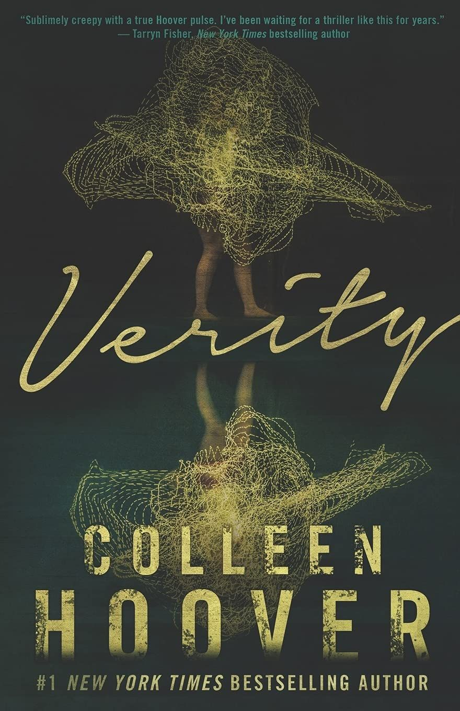

LIBRARY

THE 6:20 MAN
A cryptic murder pulls a former soldier turned financial analyst deep into the corruption and menace that prowl beneath the opulent world of finance, in this #1 New York Times bestselling thriller from David Baldacci. more..

The Light We Carry: Overcoming in Uncertain Times
In an inspiring follow-up to her critically acclaimed, #1 bestselling memoir Becoming, former First Lady Michelle Obama shares practical wisdom and more..

Verity
Lowen Ashleigh is a struggling writer on the brink of financial ruin when she accepts the job offer of a lifetime. Jeremy Crawford, husband of bestselling author Verity Crawford, has hired Lowen to complete the remaining books .more..

Twisted Dreams (German Edition)
There's no escaping the past... When her brother's best friend moves into the house next door, Ava Chen's life changes more..

What Moves the Dead
From T. Kingfisher, the award-winning author of The Twisted Ones, comes What Moves the Dead, a gripping and atmospheric retelling of Edgar Allan Poe's classic "The Fall of the House of more..

Harry Potter and the Sorcerer's Stone
Harry Potter has never even heard of Hogwarts when the letters start dropping on the doormat at number four, Privet Drive. Addressed in green ink on yellowish parchment with a purple seal, they are more..

The Eye of the World (The Wheel of Time Series #1)
The Eye of the World, the first novel in Robert Jordan's #1 New York Times bestselling epic fantasy series, The Wheel of Time®, follows Moiraine Damodred as she more..

The Hobbit
Bilbo Baggins is a hobbit who enjoys a comfortable, unambitious life, rarely traveling any farther than his pantry or cellar. But his contentment is disturbed when the wizard Gandalf and a company of dwarves arrive on his doorstep more..